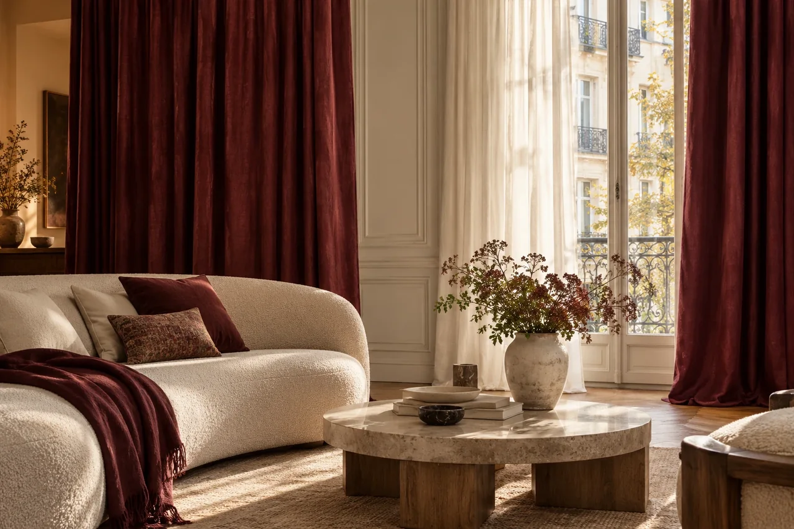
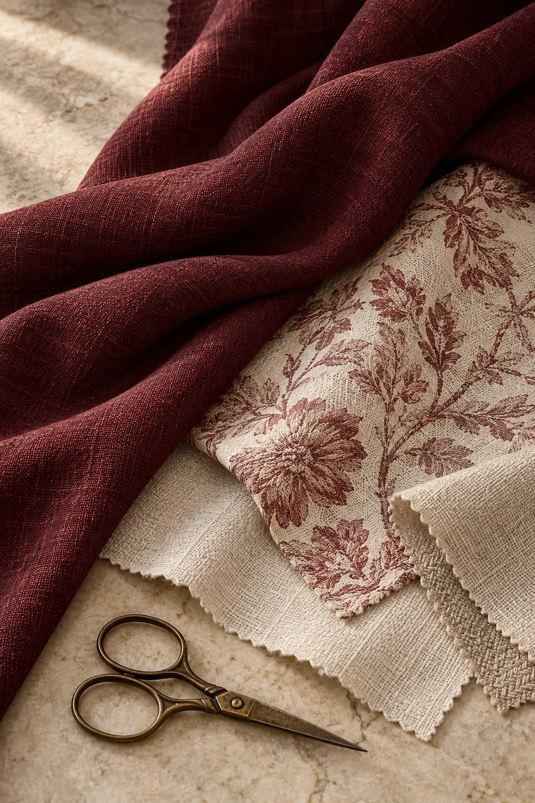
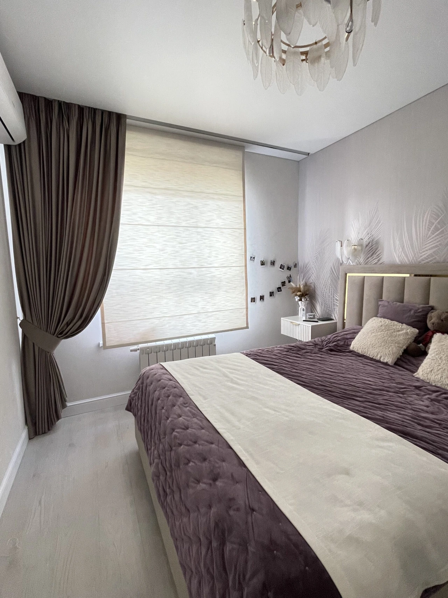

01 / ПОРТЬЕРЫ И ТЮЛЬТёплая палитра,
Тёплая палитра,
мягкие складки
Полупрозрачный тюль и плотные портьеры. На фото можно увидеть посадку, длину и сочетание двух тканей.
 текстильное ательеОбсудить мой интерьер ↗
текстильное ательеОбсудить мой интерьер ↗
Королёв · Москва · Московская область
Мастерская Татьяны Драйдт. Подбор тканей, собственный пошив и оформление окон — с замером, доставкой и установкой.
Обсудить подбор штор ↗Посмотреть наши работы →Для знакомства достаточно фото комнаты.
С моделью и тканями поможем определиться.

01Мастерская с историей с 2002 года
02Собственный швейный цех
03От подбора тканей до навески штор
От одного окна до целого дома
Начните с того, что вам нужно.
Остальное обсудим вместе.
 01 / ШТОРЫ
01 / ШТОРЫПортьеры, тюль, модели на люверсах, французские и австрийские шторы. Подбираем ткань и шьём по размерам ваших окон.
Подробнее о пошиве →
02 / РИМСКИЕ ШТОРЫКогда хочется сохранить лёгкость интерьера. Самостоятельно или в сочетании с портьерами.
Подробнее о римских шторах → 03 / ТЕКСТИЛЬНЫЙ ДЕКОР
03 / ТЕКСТИЛЬНЫЙ ДЕКОРПокрывала, декоративные подушки, чехлы, скатерти и дорожки. Создаём текстиль под размеры и палитру вашего интерьера.
Подробнее о текстиле →Дополняем оформление профильными, подъёмными и электрическими карнизами. Подбор системы и монтаж обсуждаем вместе со шторами.
Обсудить карнизы ↗Сначала — ваш дом. Потом — ткань.
Смотрим на освещение, оттенки стен и мебель. Обсуждаем, нужно ли затемнение, сколько света сохранить и как вы хотите видеть окно.
Так выбираем не просто понравившуюся ткань, а решение для вашей комнаты.
Подобрать решение для моей комнаты ↗
За каждой работой — человек
История мастерской началась в 2002 году. Татьяна пришла в текстильный дизайн из профессии закройщицы и занимается подбором тканей, проектированием и пошивом.
На знакомстве обсуждаем вашу комнату и пожелания. Затем подбираем ткани, фурнитуру и аксессуары. Собственный цех позволяет следить за качеством на каждом этапе.
Обсудить интерьер с Татьяной ↗Фотографии из архива Dreidt
Здесь — фотографии оформления.
Нажмите, чтобы рассмотреть детали.
Полупрозрачный тюль и плотные портьеры. На фото можно увидеть посадку, длину и сочетание двух тканей.
Серые портьеры в сочетании со светлым тюлем. Лаконичное оформление с акцентом на ритм складок.
Римская штора оставляет пространство вокруг окна свободным. На фотографии из архива — пример лаконичного текстильного оформления.
Обсудить похожее решение ↗Покрывало и декоративные подушки собирают зону отдыха в единый образ. Мягкая бирюзовая ткань поддерживает спокойную палитру комнаты.
Обсудить похожее решение ↗Портьеры, тюль и покрывало в близких оттенках. Разные фактуры придают комнате глубину без резких цветовых контрастов.
Обсудить похожее решение ↗Архивная фотография улучшена с помощью ИИ. Посмотреть оригинал ↗
Объёмные подушки с цветочным декором из архива мастерской. Пример того, как текстиль может стать самостоятельным акцентом.
Обсудить похожее решение ↗Нравится одно из сочетаний? Обсудим, как адаптировать его к вашей комнате.
Хочу похожее оформление ↗Из дневника мастерской
Для спальни выбрали светлый блэкаут, ручную складку и электрокарниз. Специальная обработка исключает видимую строчку на лицевой стороне ткани.
Посмотреть видео проекта ↗Заказчица хотела добавить портьеры в интерьер с нишей под жалюзи. Решение — блэкаут на ручной складке, деликатно вписанный в существующее пространство.
Посмотреть решение ↗Для высоких окон важны и точный пошив, и монтаж. В одном из проектов вес каждой портьеры составил около 12 кг — с основной тканью и подкладкой.
Посмотреть монтаж ↗Заказ без лишней неопределённости
Сначала обсуждаем решение.
Затем согласуем детали и стоимость.
После знакомства специалист выезжает на объект с образцами тканей и карнизов. Обсуждаем задачу и выполняем замер.
Подбираем материалы и модель, рассчитываем стоимость проекта. Согласуем состав заказа и заключаем договор.
Шьём в собственном цехе. Организуем доставку, установку карнизов и навеску штор в согласованное время.
Цена зависит от ткани, расхода материала, модели и состава работ. Для предметного расчёта понадобятся размеры окна и выбранное решение.
Обсудить мой заказ ↗Ориентиры для первого разговора
Фабричные ткани и пошив на шторной тесьме.
Пошив от 10 днейБрендовые ткани и заказные коллекции.
Пошив от 15 днейОсобые фактуры и премиальный пошив.
Пошив от 20 днейОриентиры из предложений мастерской на dreidt.com. Точная цена и срок зависят от размеров, ткани и состава работ; рассчитываются индивидуально.
Уточнить стоимость моего проекта ↗Перед знакомством
Это нормально. Начните с фото комнаты и расскажите, что вам нравится и что хочется изменить. Обсудим подходящие варианты.
Для первого обсуждения достаточно фото и примерных размеров. Для окончательного расчёта и пошива нужны точные замеры.
Ткань, её расход, модель штор, сложность пошива и дополнительные работы. Состав заказа и стоимость согласуем до пошива.
Первый шаг — знакомство с вашим интерьером
Напишите Татьяне и отправьте фото комнаты либо позвоните в мастерскую. Обсудим оформление и данные для расчёта.
Пришлите фото комнаты в мессенджер или позвоните. Обсудим модель, ткань и данные для расчёта. Условия выезда и замера согласуем при обращении.
Мастерская в Королёве. Работаем с интерьерами в Москве и Московской области.
Приходите знакомиться с тканями
Пн–Сб: 10:00–19:00
Воскресенье — выходной.
Работаем с интерьерами в Москве и Московской области.
Открыть адрес в Яндекс Картах ↗Найдите удобный маршрут до проспекта Космонавтов, 34Б.
Карта загрузится с сервиса Яндекса после нажатия.